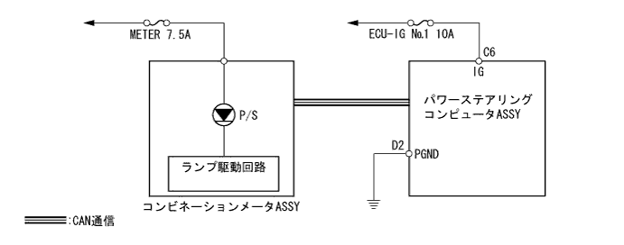

Electric Power Steering System P/S Warning Light Remains ON |

)| Step 1 | Inspect Connection Condition of Each Part |
Lightly shake the connectors and wire harness of the power steering computer assembly up and down and left and right, and check the condition of the P/S warning light.
|
| ||||
| OK | |
| Step 2 | Inspect Control System CAN Communication System |
Using SST (TaSCAN), check the DTCs of the CAN communication system. (see)
|
| ||||
| OK | |
| Step 3 | Inspect Power Steering Computer Assembly (IG, PGND) |
 |
Disconnect connectors C and D of the power steering computer assembly.
Using SST (Toyota electrical tester), inspect the voltage and resistance between the wire harness side connector of the power steering computer assembly and body ground.
| Tester Connection | Condition | Standard |
|---|---|---|
| C6 (IG) - Body ground | IG ON | 11 to 14V |
| Tester Connection | Condition | Standard |
|---|---|---|
| D2 (PGND) - Body ground | Always | Below 1 Ω |
|
| ||||
| OK | |
| Step 4 | Replace Power Steering Computer Assembly |
After replacing the power steering computer assembly, check the illumination condition of the P/S warning light on the combination meter assembly. (see)
|
| ||||
| OK | ||
| ||